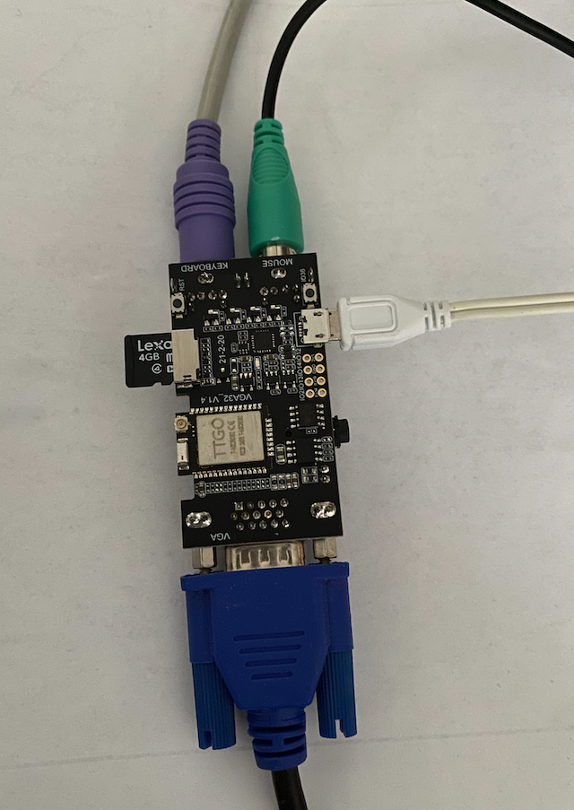
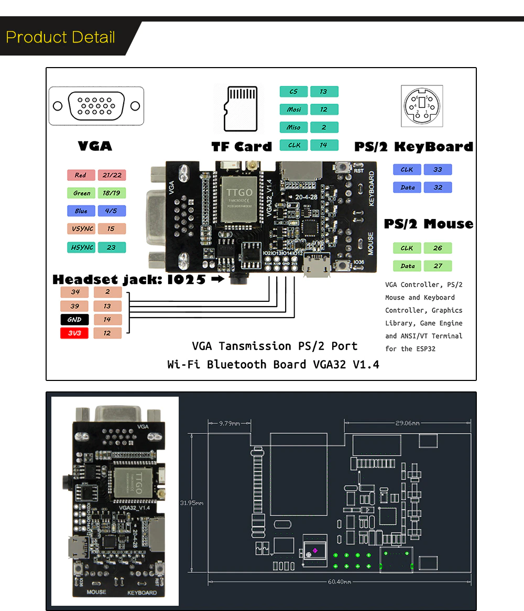
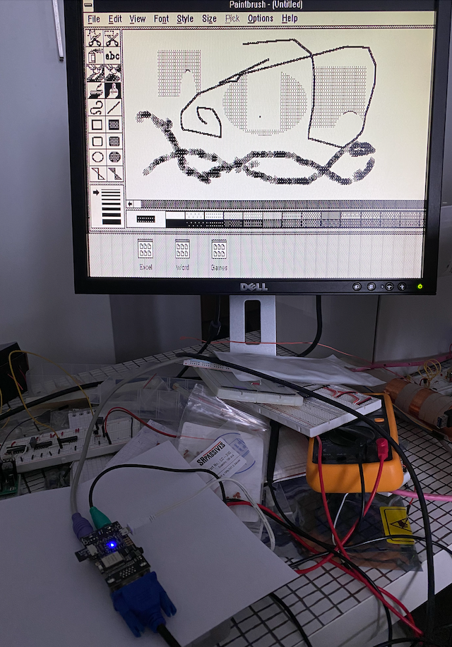

After waiting about 3 weeks I finally got my TTGO VGA32 v1.4 from Aliexpress. Immediately, after getting my hands on the device I wanted to test it with FabGL library. 
NOTE: While powering the board using a USB 2.0 port, my 20+ year old PS/2 keyboard refused to work. Probably the USB port was not able to source enough current. In the end I used a power supply designed for Raspbarry PI 3B. With that setup everything worked correctly. USB 3.0 can source much more current than USB 2.0, but I did not test that setup.
It must be admitted that FabGL is compatible with TTGO VGA32 board, but only with version v1.2.
Version v1.4 has slightly different pinout (MISO and MOSI connections to SDCARD use different IO ports).

To run PCEmulator example we must edit PCEmulator source code:
/* SIGNATURE:
bool mountSDCard ( bool formatOnFail,
char const * mountPath,
size_t maxFiles = 4,
int allocationUnitSize = 16 * 1024,
int MISO = 16,
int MOSI = 17,
int CLK = 14,
int CS = 13
)
*/
// original: if (!FileBrowser::mountSDCard(false, "/SD", 8))
// changed:
if (!FileBrowser::mountSDCard(false, "/SD", 8, 16*1024, 2, 12, 14, 13))
ibox.message("Error!", "This app requires a SD-CARD!", nullptr, nullptr);Notice that now we will use ports 2 and 12 for MISO and MOSI lines.
After this change PCEmulator starts without any troubles. I could run Windows 3.11 and use all the provided programs: 
Although Windows 3.11 works as intended, it is working quite slow. It can take several seconds to e.g. open Excel, on the other hand you can comfortably play Reversi. When it comes to provided DOS games, I had less luck. Most of them either froze the emulator or simply refuse to start. Looks like there is still much work to be done on this project.
Anyway having a cheap, compatible, and ready to use board is very nice. With FabGL on top of it, I am sure I will have no troubles finding some good use of it.
Resources: